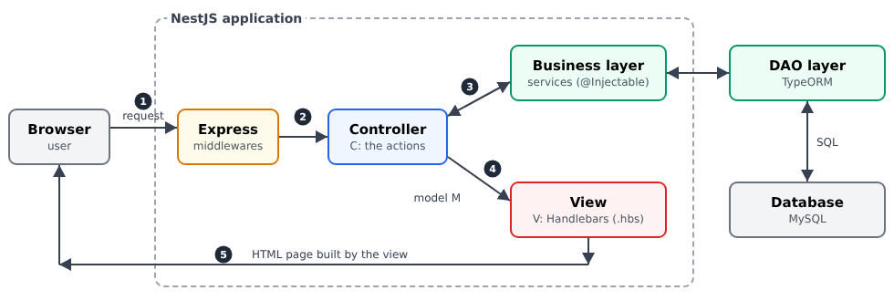

1. Introdução
O PDF do documento está |AQUI|.
Os códigos do documento estão |AQUI|.
Este documento é um produto da IA Claude, da Anthropic. Seu objetivo é adaptar o documento *Introdução ao ASP.NET MVC por meio de exemplos* (2013) ao framework web [NestJS]:
- o framework [ASP.NET MVC] e a linguagem [C#] são substituídos pelo framework [NestJS] e pela linguagem [TypeScript];
- as views [Razor] são substituídas por views [Handlebars];
- [Entity Framework] O acesso a dados é substituído por um ORM, [TypeORM], e um banco de dados [MySQL].
O documento segue a estrutura do curso original: primeiro, vários pequenos projetos, cada um focado em um único conceito, seguidos de um estudo de caso completo — uma aplicação web para agendar consultas em um consultório médico —, com todos os arquivos totalmente comentados. O capítulo do curso original dedicado aos fundamentos da programação web (o protocolo HTTP, a linguagem HTML) não foi incluído: presume-se que esses fundamentos sejam conhecidos.
1.1. O papel do NestJS em uma aplicação web
Uma aplicação web costuma ser construída em camadas, e cada camada se comunica apenas com as camadas vizinhas:

- a camada web recebe as requisições HTTP do navegador e devolve a ele páginas HTML. O [NestJS] nos ajuda a escrever essa camada;
- a camada de negócio contém as regras de negócio da aplicação (por exemplo, “um paciente só pode ter uma consulta futura”). Ela não sabe nada sobre a web: poderia servir igualmente a uma aplicação de linha de comando;
- a camada de acesso a dados (camada [DAO], de [Data Access Object]) lê e grava no banco de dados. Usaremos o ORM [TypeORM] ([Object Relational Mapper]), que mapeia as linhas das tabelas para objetos [TypeScript].
A própria camada web segue o modelo [MVC] ([Model – View – Controller]):
- o controller (C) é uma classe cujos métodos — chamados de ações — tratam, cada um, um tipo específico de requisição (por exemplo, [GET /schedule]). Uma ação lê os parâmetros da requisição, invoca a camada de negócio e, em seguida, escolhe a view a exibir;
- o modelo (M) é o conjunto de dados que a ação passa para a view: um simples objeto [JavaScript];
- a view (V) é um arquivo [Handlebars] (extensão [.hbs]): um arquivo HTML em que as tags [{{...}}] são substituídas por dados do modelo.
O processamento de uma requisição segue as etapas numeradas no diagrama:
- 1: O navegador envia uma requisição HTTP, por exemplo, [GET /schedule?doctorId=1&day=2026-09-24];
- 2: O [NestJS], que se apoia no servidor web [Express], seleciona a ação responsável por tratar essa requisição: é o roteamento. Antes de chegar a esse ponto, a requisição pode passar por middleware, guards, interceptors e pipes, que exploraremos nos capítulos seguintes;
- 3: A ação solicita à camada de negócio os dados de que precisa;
- 4: Ela constrói o modelo da view e especifica a view que deve exibi-lo;
- 5: A engine de views [Handlebars] gera a página HTML, que o [NestJS] devolve ao navegador.
O [NestJS] é um framework [Node.js] escrito em [TypeScript]. Ele se baseia nos conceitos dos frameworks [Spring] ([Java]) e [Angular] : os decoradores ([@Controller], [@Get], [@Injectable]...) descrevem o papel de cada classe, e a injeção de dependência fornece a cada objeto as dependências de que ele precisa. É frequentemente usado para escrever servidores que devolvem JSON a um cliente [JavaScript] ([Angular], [React], [Flutter]...). Este documento o utiliza para escrever uma aplicação web clássica: o servidor gera as páginas HTML e o navegador apenas as exibe.
1.2. Ferramentas utilizadas
Os exemplos foram escritos e testados com as seguintes ferramentas (sua instalação é descrita no apêndice):
- [Node.js] 20 e seu gerenciador de pacotes [npm];
- o editor [Visual Studio Code];
- um navegador recente ([Chrome], [Firefox], [Edge]);
- a ferramenta de linha de comando [curl], que exibe as respostas HTTP brutas (ela já vem com o [Windows] 10 e 11);
- o SGBD [MySQL] (ou [MariaDB]), por exemplo, o do [Laragon] no [Windows], a partir do capítulo sobre acesso a dados.
As versões das bibliotecas são as do arquivo [package.json] da pasta de exemplos: [NestJS] 10, [TypeScript] 5, [hbs] 4 ([Handlebars]), [class-validator] 0.14, [TypeORM] 0.3, [Bootstrap] 5.
1.3. Exemplos
Os exemplos ficam armazenados em uma pasta chamada [examples], com uma subpasta por exemplo:
Todos os exemplos compartilham as mesmas bibliotecas, declaradas em [examples/package.json]. Elas são instaladas uma única vez, em um console aberto na pasta [examples]. No VSCode, abra a pasta examples:

depois, em um terminal integrado ao VSCode, digite o comando
Cada exemplo tem então a estrutura mínima de um projeto [NestJS]:
- [src]: o código [TypeScript];
- [views]: as views [Handlebars] (a partir do Capítulo 4);
- [nest-cli.json]: a configuração da ferramenta de linha de comando do [NestJS];
- [tsconfig.json]: a configuração do compilador [TypeScript].
Para executar um exemplo, abra um console na

e digite:
O [npx] localiza a ferramenta [nest] na pasta [node_modules] da pasta pai. [nest start] compila o código [TypeScript] na pasta [dist] e, em seguida, executa [dist/main.js]. Com a opção [--watch], o código é recompilado e o servidor é reiniciado sempre que um arquivo [.ts] é modificado:
Todos os exemplos escutam na porta 3000: apenas um pode estar em execução por vez. Pare o servidor com [Ctrl-C] no console.
O arquivo [tsconfig.json] é o mesmo para todos os exemplos:
Vamos comentar esse arquivo:
- linha 3: o código compilado usa os módulos [CommonJS] do [Node.js] ([require]);
- linha 4: o código gerado é do [JavaScript] recente (ES2022), que é suportado pelo [Node.js] 20;
- linhas 6–7: o código-fonte fica em [src], e o código compilado fica em [dist];
- linhas 9–10: necessárias para o [NestJS]. Os decoradores ([@Controller]...) são um recurso do [TypeScript] que precisa ser ativado, e [emitDecoratorMetadata] preserva no código compilado os tipos dos parâmetros de construtores e métodos: é graças a isso que o [NestJS] sabe qual objeto injetar em um construtor;
- linha 12: o compilador sinaliza o uso de um valor que pode ser [null] ou [undefined];
- linha 13: os arquivos de declaração das bibliotecas não são verificados (compilação mais rápida).
O arquivo [nest-cli.json] também é comum a todos os exemplos:
- linha 4: o código-fonte fica em [src];
- linha 6: a pasta [dist] é esvaziada antes de cada compilação (um arquivo excluído de [src] não deixa para trás uma cópia compilada obsoleta).
1.4. Conteúdo do documento
O documento é organizado da seguinte forma:
Capítulo | Conteúdo | Exemplos |
Controllers, ações, | Do navegador à ação: rotas, respostas, redirecionamentos, módulos | 01 a 06 |
O modelo da ação | Parâmetros da requisição: conversão, validação, formulários POST | 07 a 12 |
A view e seu modelo | Handlebars, layouts, views parciais, helpers, formulários, validação, PRG | 13 a 21 |
Internacionalização | Uma aplicação em francês e inglês | 22 |
Escopos de dados | aplicação, requisição, cliente | 23 |
O ciclo de vida de uma requisição | middleware, guard, interceptor, pipe, filtro de exceção | 24 |
Autenticação e autorização | JWT em um cookie, papéis, CAPTCHA, limites de tentativas | 25–27 |
Arquitetura em camadas | Web / negócio / DAO com TypeORM e MySQL | 28 |
Estudo de caso | A aplicação RdvMedecins, explicada arquivo por arquivo | - |
Cada exemplo introduz apenas alguns conceitos novos, e os capítulos se apoiam uns nos outros: o melhor é lê-los em ordem. O estudo de caso, por sua vez, recorre a todos os conceitos dos capítulos anteriores: sempre que pertinente, seu comentário remete ao exemplo em que o conceito foi introduzido.